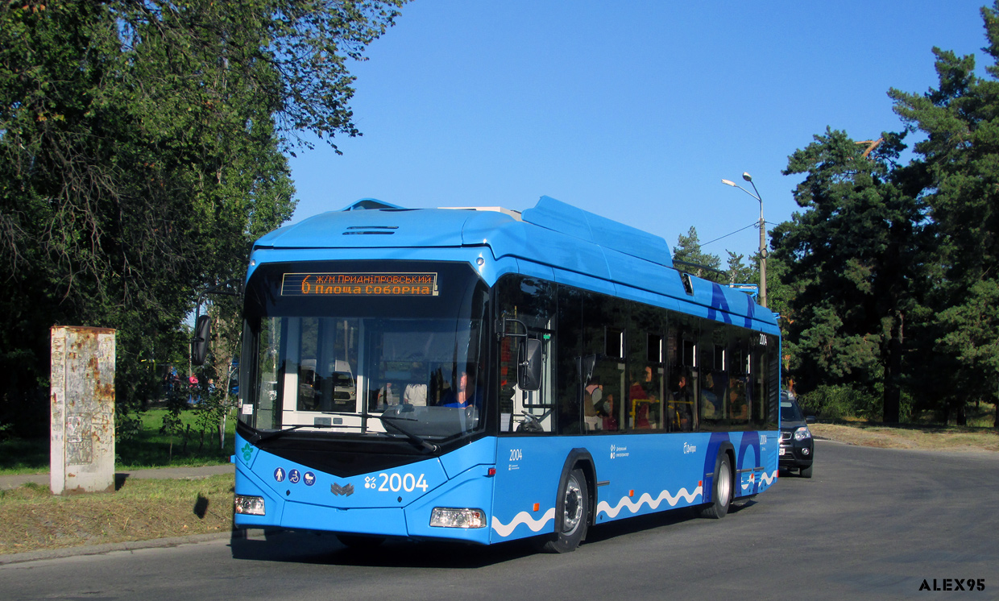
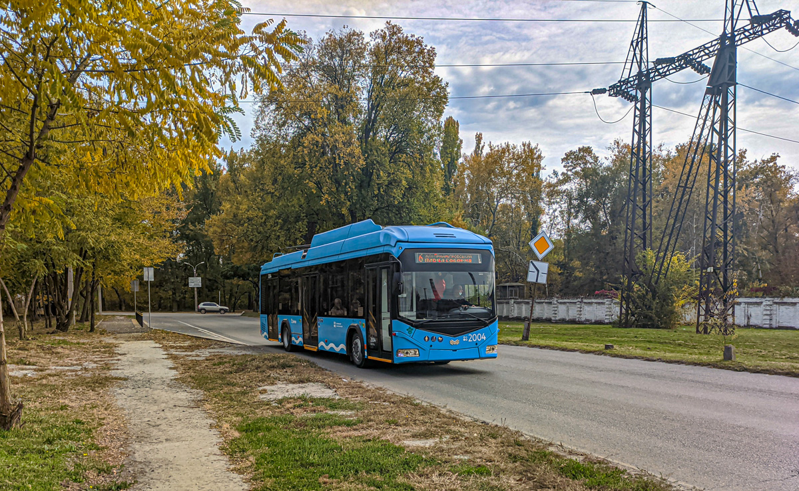
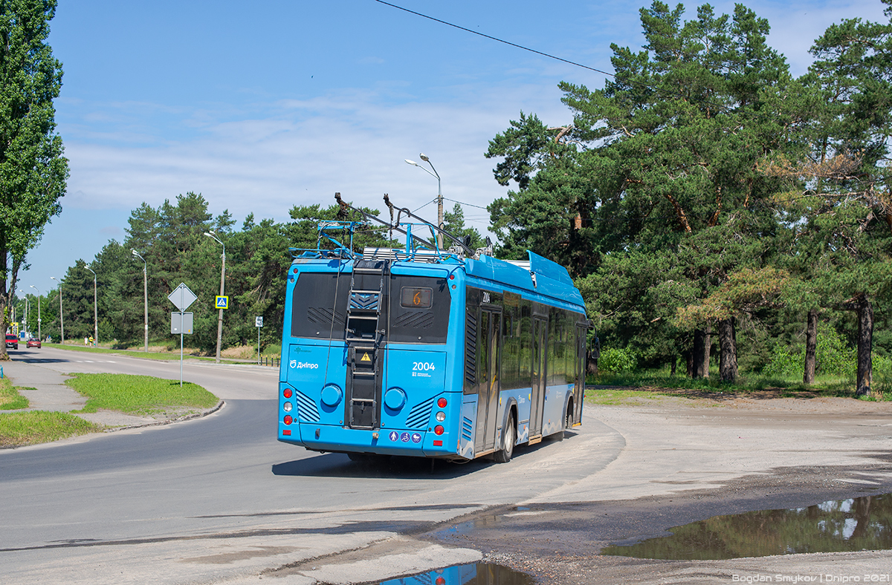
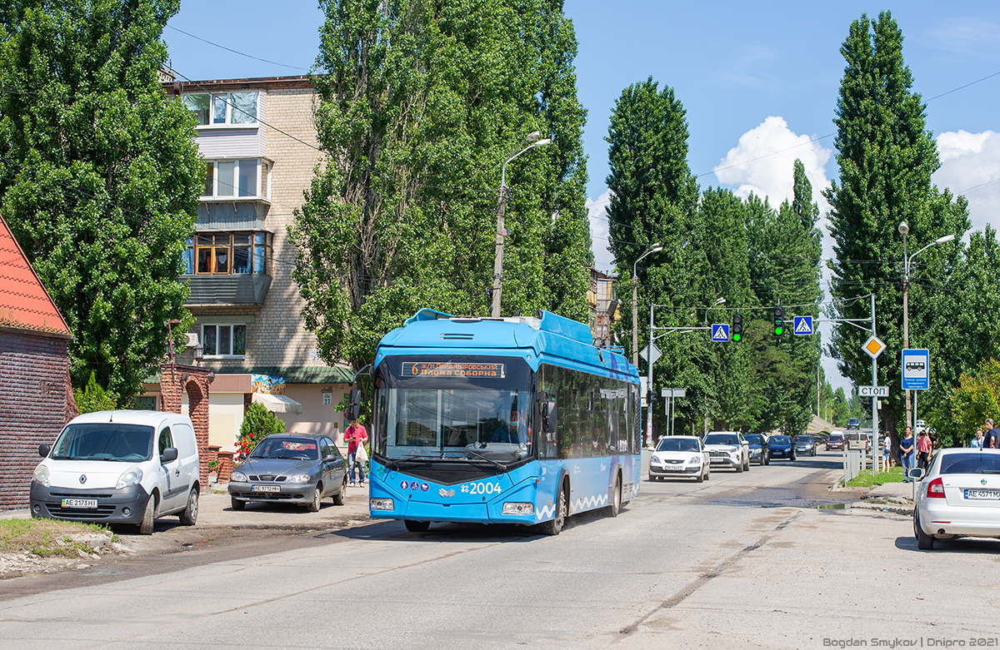
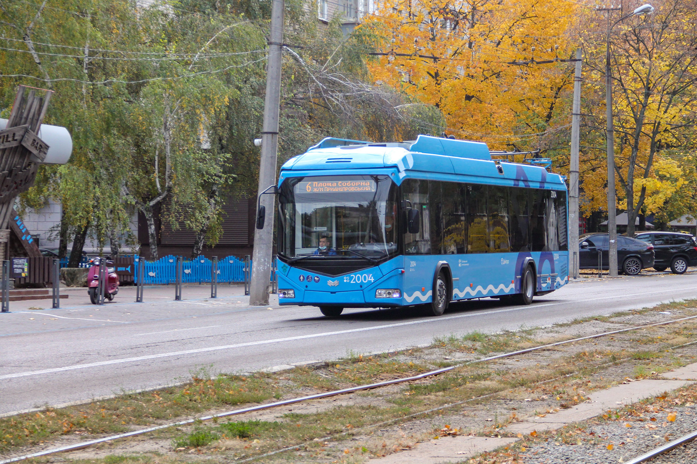
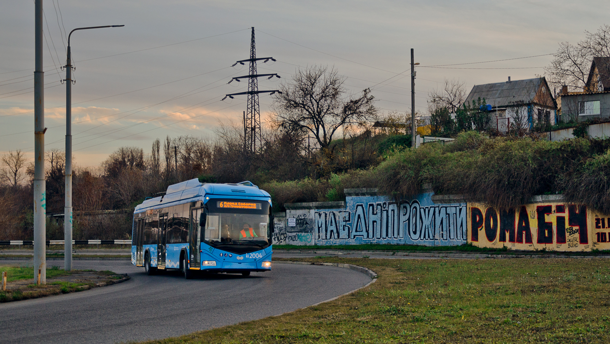
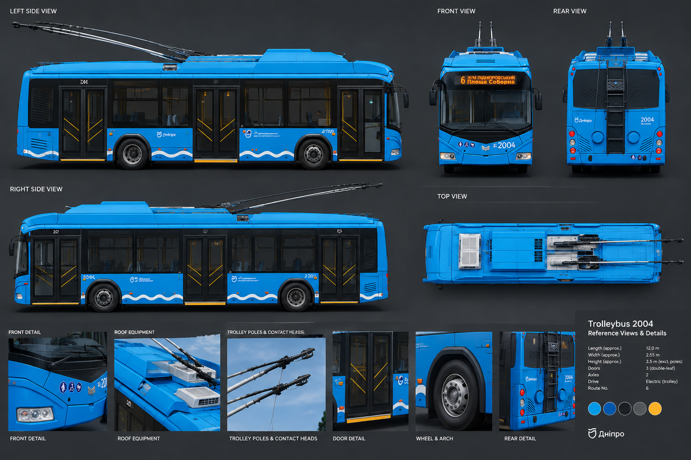
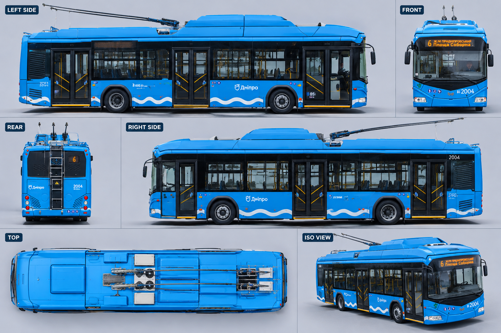

01 · Передний кожух и стекло
Закрытый синий колпак, скруглённые верхние углы стекла, низкая чёрная V-маска.
00013495.jpgНастоящие фотографии задают форму. Сводные листы помогают читать силуэт, но содержат противоречия.

Закрытый синий колпак, скруглённые верхние углы стекла, низкая чёрная V-маска.
00013495.jpg
Три пары дверей, низкий кузов, высокий объём крыши перед креплениями штанг.
00024661.jpg
Закрытый отсек, закруглённые углы кормы, центральная лестница и барабаны.
00097061.jpg
Ширина лобового стекла и форма козырька. Перспектива не даёт точного чертежа.
00098245.jpg
Непрерывное остекление без пассажирских дверей; ступенчатая форма крыши.
00100179.jpg
Общий силуэт, V-маска и форма закрытого кожуха читаются при мягком свете.
00108977.jpg
Полезен для общей компоновки. Двери на обеих сторонах и верхний вид противоречат фото.
design-sheet-1.png
Удобные ракурсы. Не переносим зеркальные двери и дублирующие крепления штанг.
design-sheet-2.png